Cases / Commercia
Projeto anterior à BoldBrands
Commercia
Identidade visual para um CRM que une inteligência artificial e atendimento humano.
Este case foi realizado por Felipe Bechstedt, hoje sócio da BoldBrands, antes da fundação da empresa. Ele faz parte da trajetória dos sócios que nos trouxe até aqui.
- Cliente
- Commercia · Porto Alegre
- Ano
- 2025
- Escopo
- Direção criativa, identidade visual, sistema de marca e aplicações
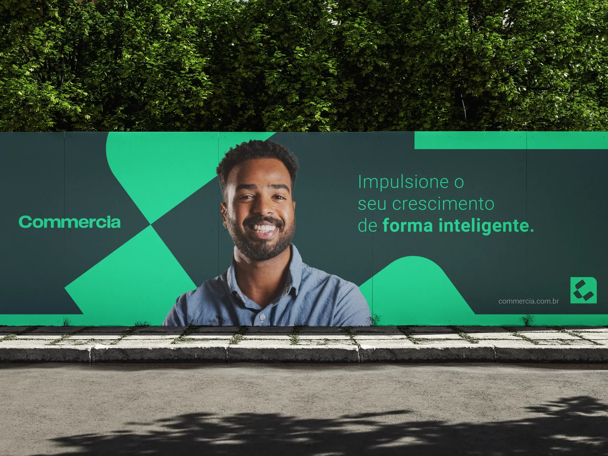
O desafio
Traduzir em marca o equilíbrio entre inteligência artificial e atendimento humano.
A Commercia é uma empresa inovadora de Porto Alegre que desenvolve soluções de CRM, unindo tecnologia de ponta a um atendimento humano e próximo. Seu maior diferencial é o uso de inteligência artificial para transformar a gestão comercial dos seus usuários, sem abrir mão da empatia que se reflete na facilidade e na agilidade com que atende seus clientes.
O que foi feito
Conceito
O equilíbrio entre inovação tecnológica e proximidade humana, com a ideia de que a tecnologia deve servir para melhorar o dia a dia de quem trabalha com vendas.
Marca
Um monograma geométrico construído em grid e um logotipo de traço sólido, em versões sobre fundo escuro e claro.
Sistema visual
Uma estética high tech, com linhas modernas e uma paleta de verdes, preto e off-white que comunica o poder da inteligência artificial e o dinamismo de soluções proativas, com elementos criativos e amigáveis que aproximam a marca das pessoas.
Aplicações
Mídia exterior, papelaria, ícone de aplicativo, redes sociais, relógio, crachás, sacola, camisetas e site.
A marca em uso
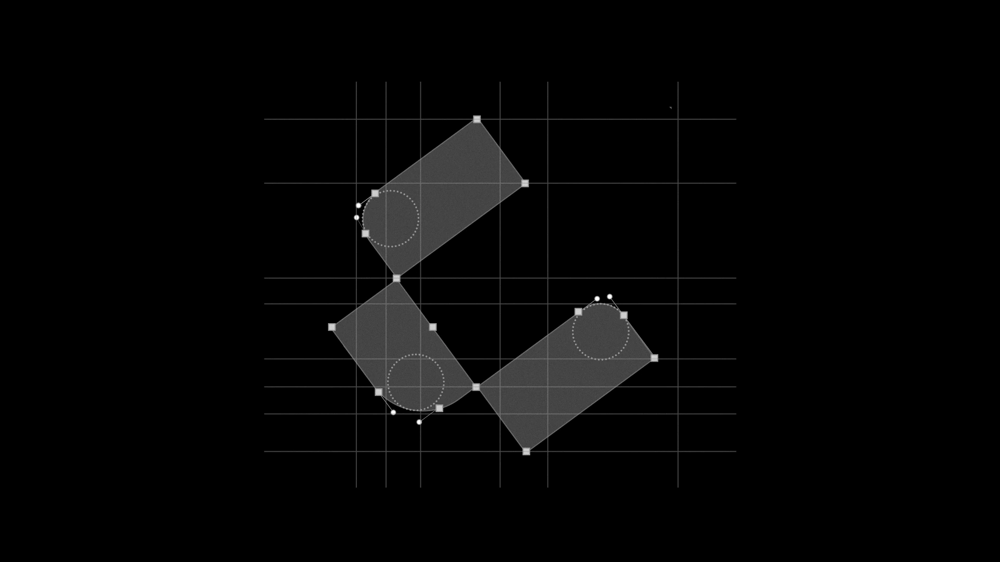
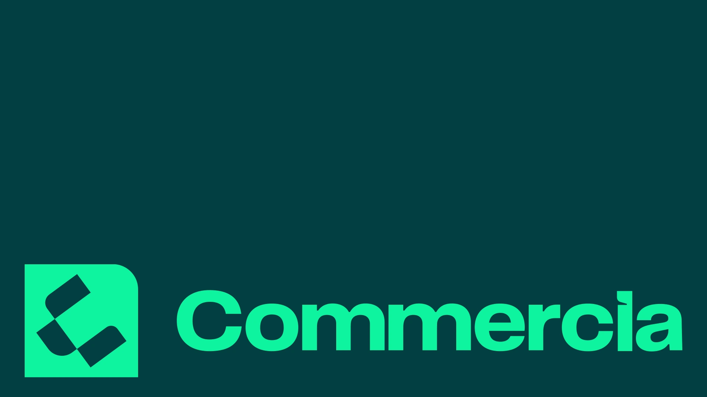
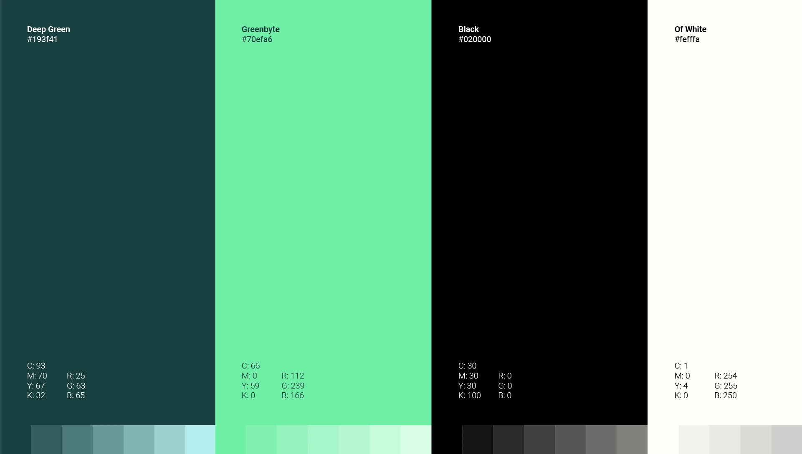
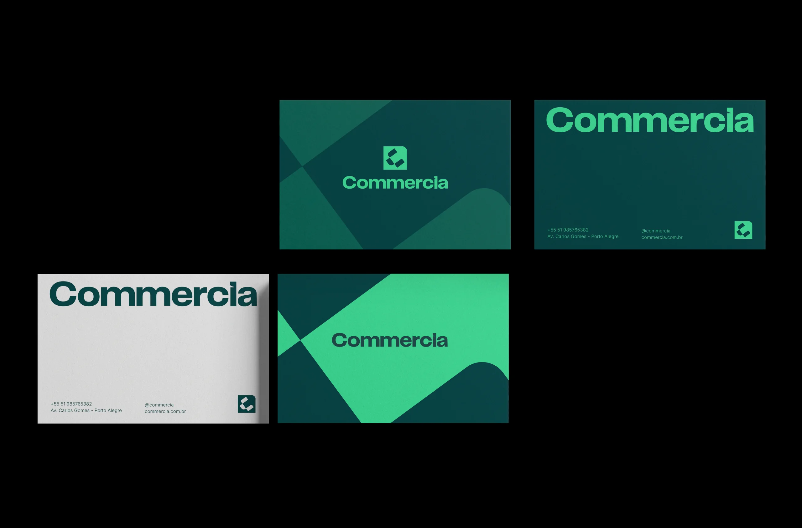
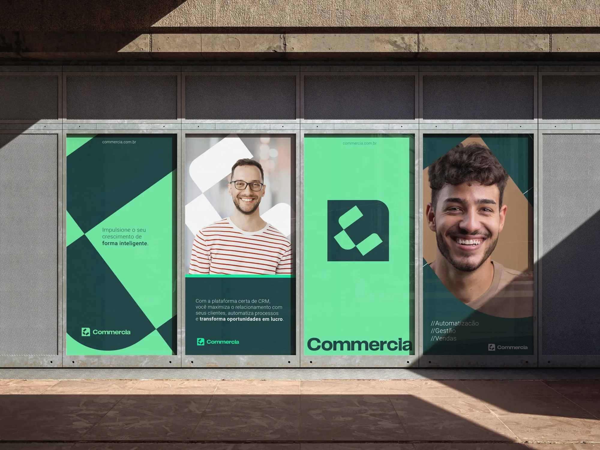
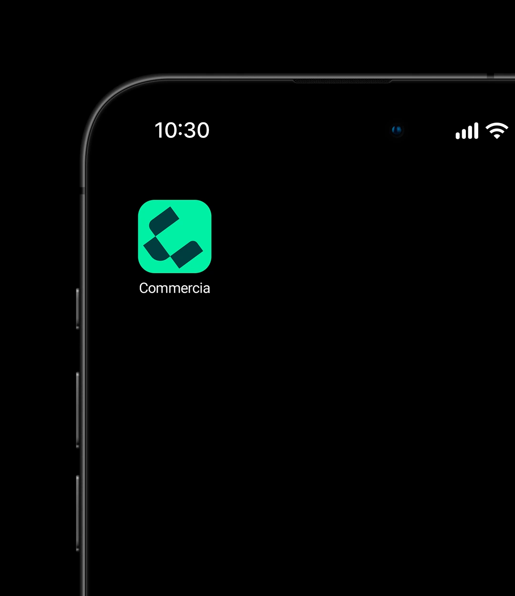
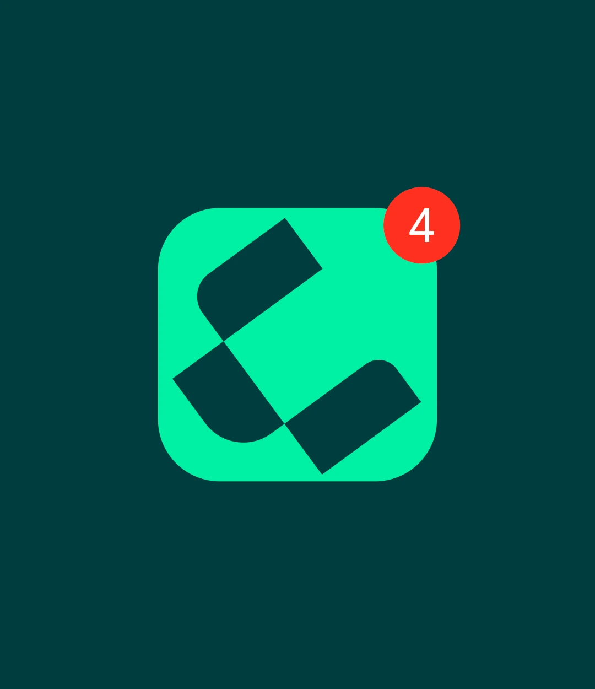
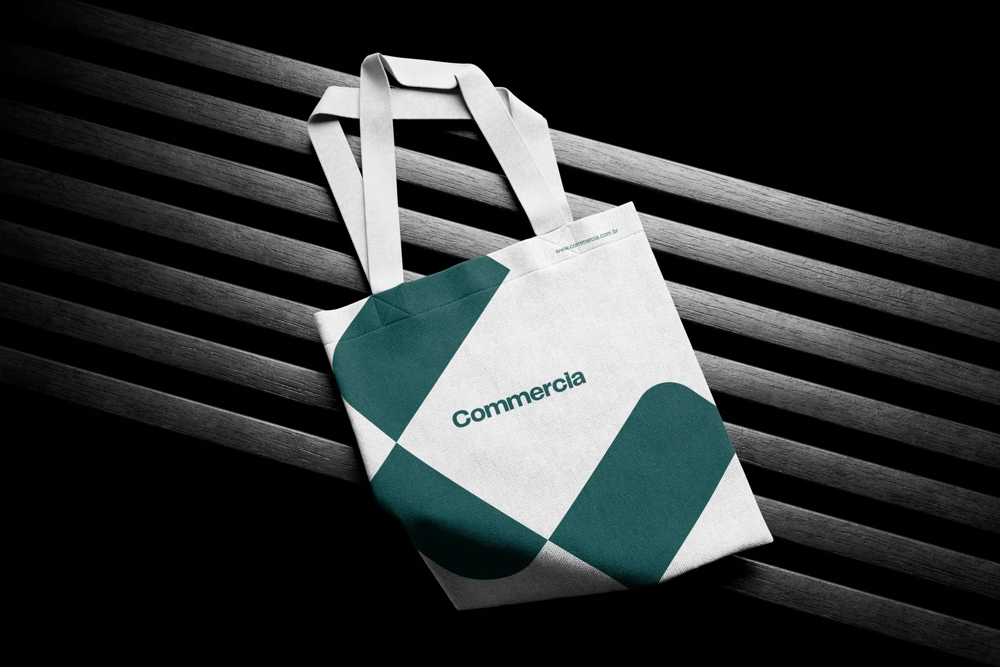
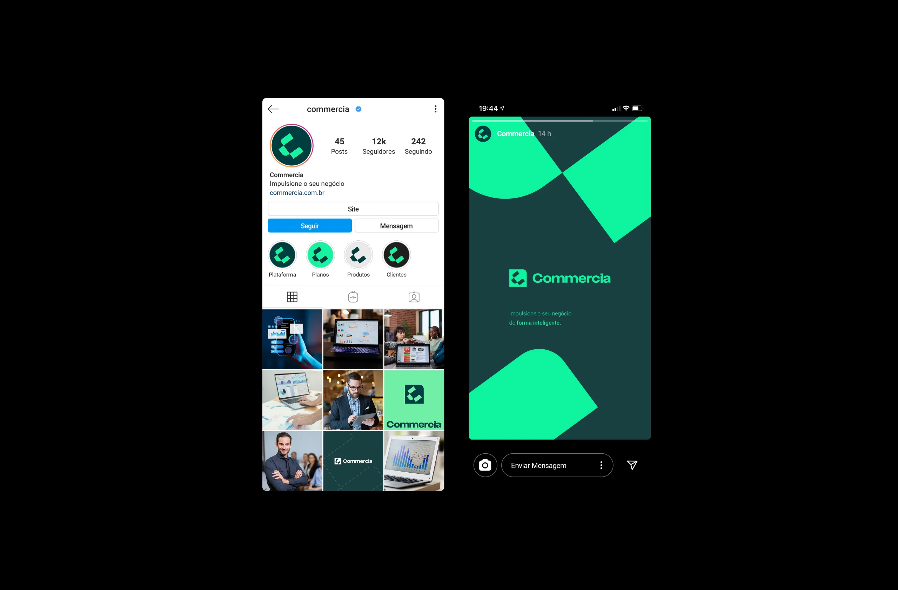
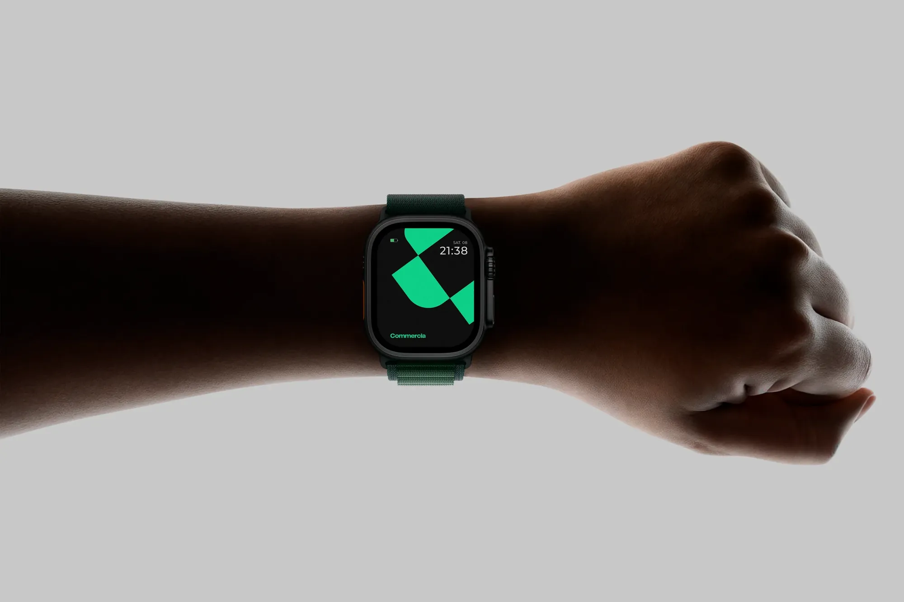
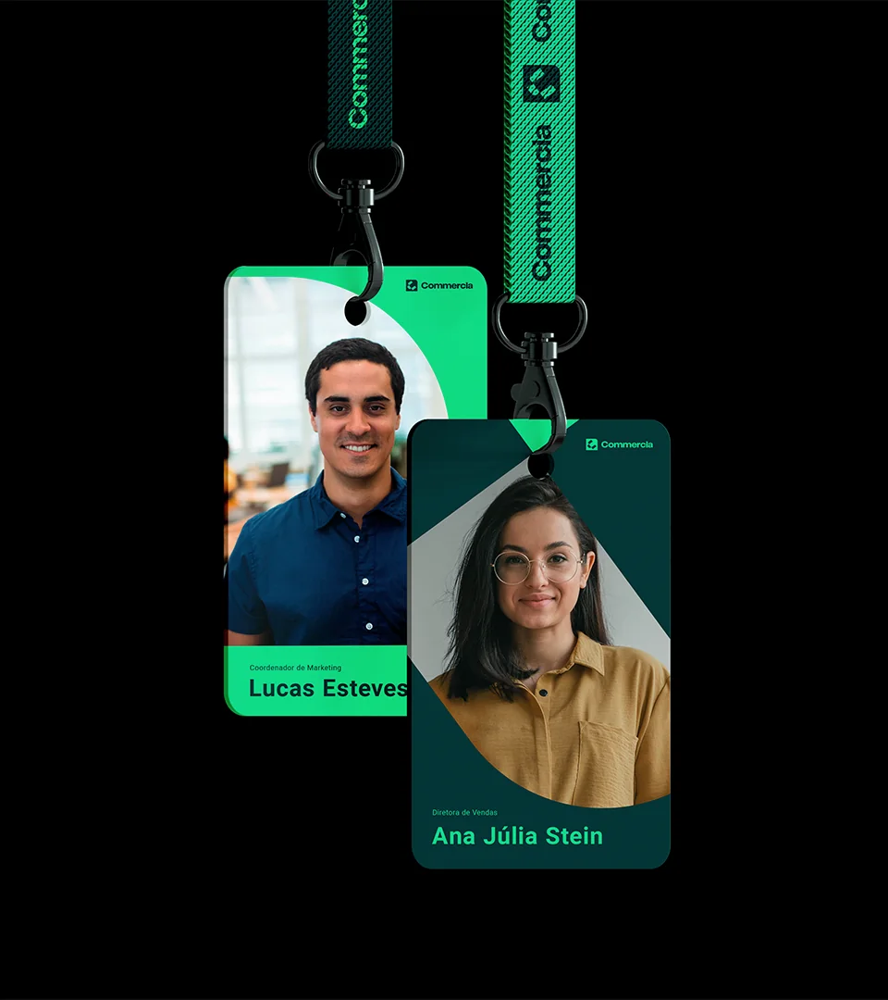
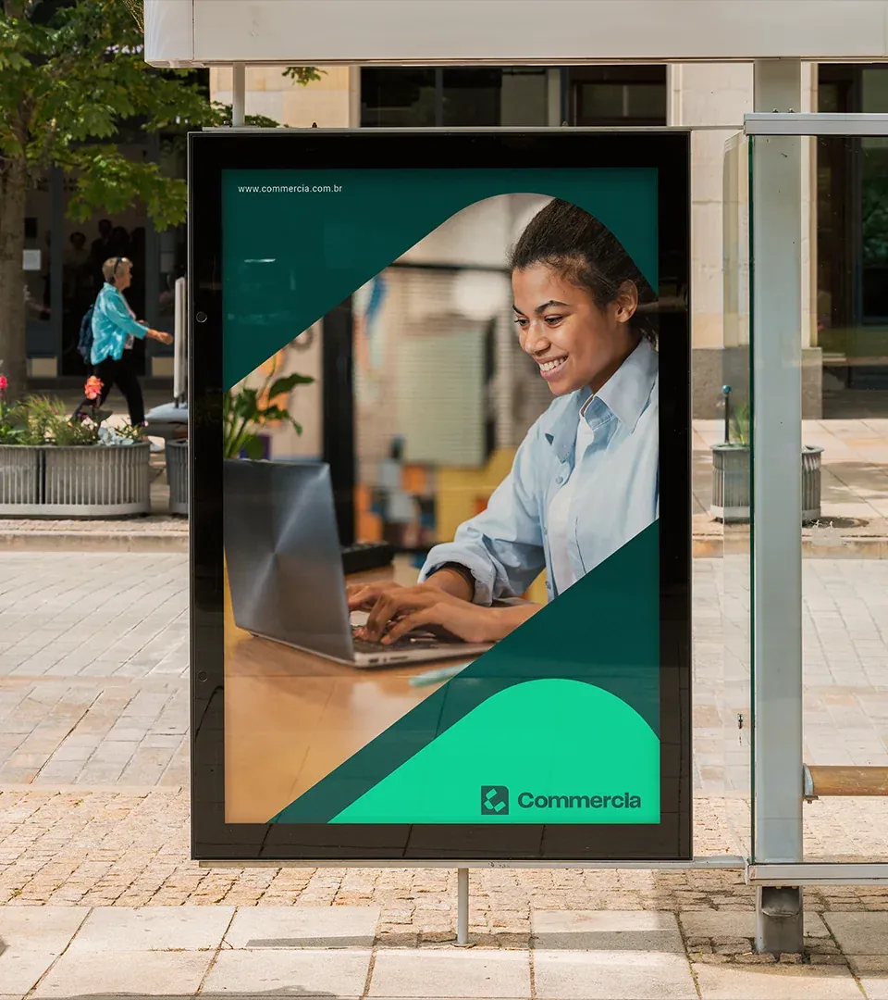
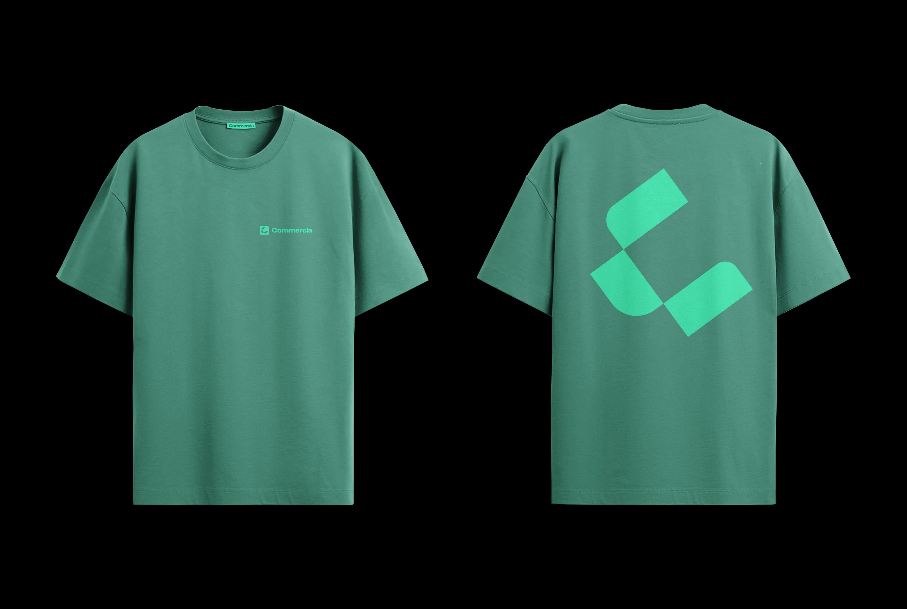
O resultado